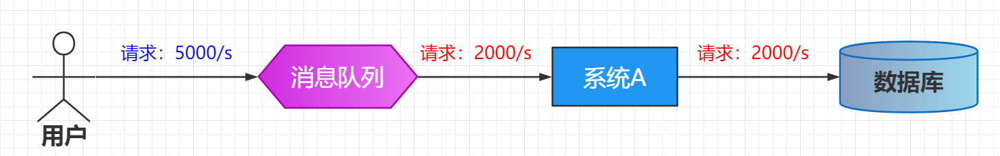
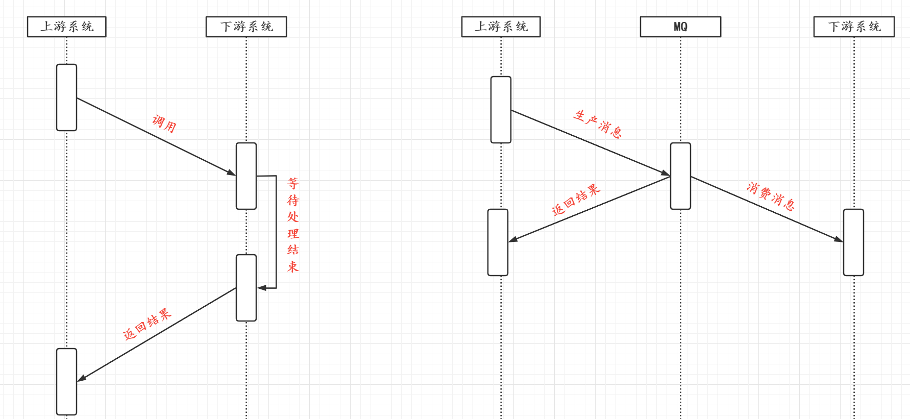
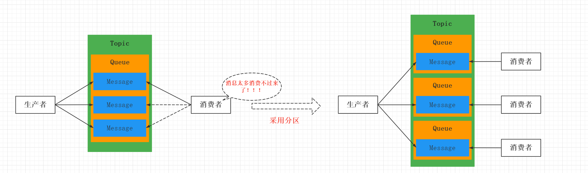
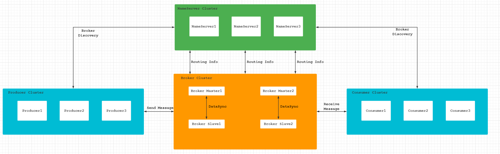
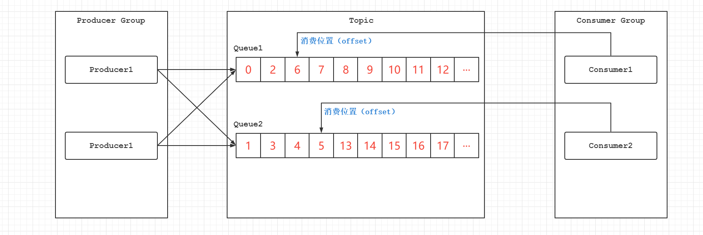
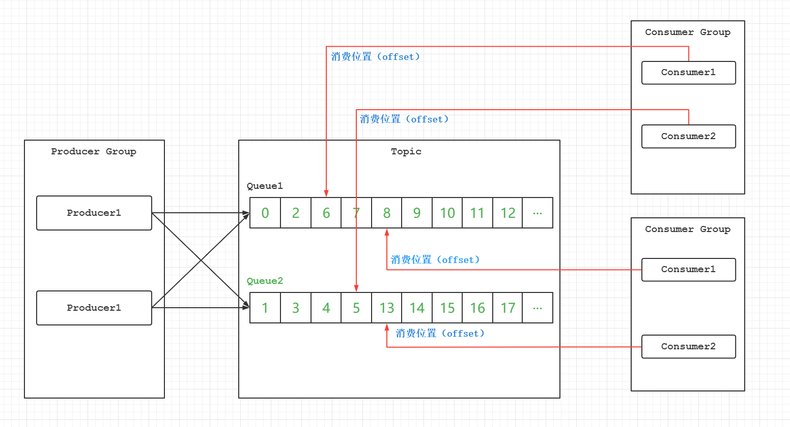
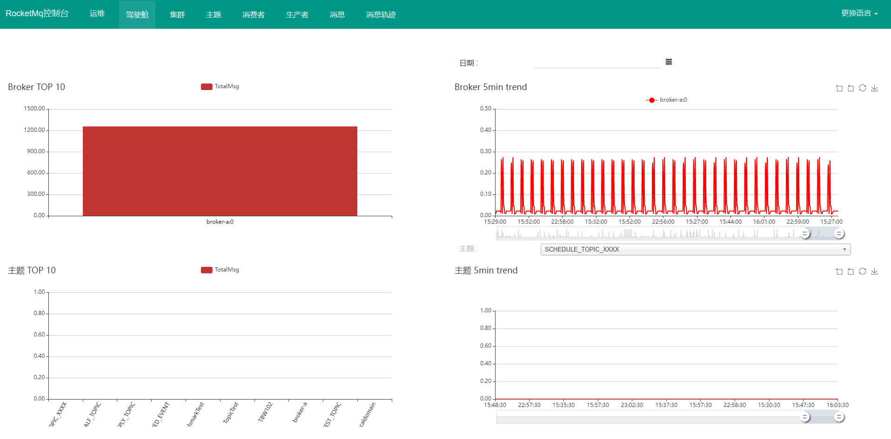
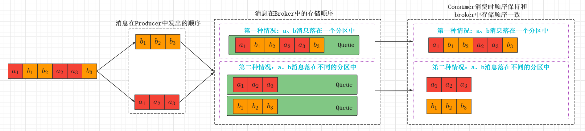
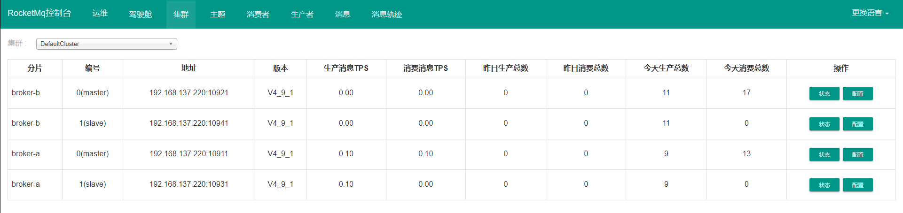

RocketMQ基础篇
RocketMQ
MQ概述
MQ是Message Queue的简称，是一种提供消息队列服务的中间件，是一套提供了消息生产、存储、消费全过程的API软件系统。
MQ的应用场景：
限流削峰
MQ可以将系统的超量请求暂存其中，以便系统后期可以慢慢进行处理，从而避免了请求丢失或系统被压垮

异步解耦
上游系统对下游系统调用若为同步调用，则大大降低系统的吞吐量与并发度，且系统耦合度太高。而异步调用则会解决这些问题，所以两层之间实现由同步到异步的转化，一般做法就是，在两层之间添加一个MQ层。

数据收集
分布式系统会产生海量的数据， 如业务日志、监控数据、用户行为等。针对这些数据进行实时或批量采集汇总，然后对这些数据进行发数据分析，这是当前互联网平台的必备技术。通过MQ完成此类数据收集是最好的工作。
常见MQ之间的对比：
| 关键词 | ACTIVEMQ | RABBITMQ | KAFKA | ROCKETMQ |
|---|---|---|---|---|
| 开发语言 | Java | ErLang | Java | Java |
| 单机吞吐量 | $10^4$ | $10^4$ | $10^5$ | $10^5$ |
| Topic | - | - | 百级Topic时会影响系统吞吐量 | 千级Topic时会影响系统吞吐量 |
| 社区活跃度 | 低 | 高 | 高 | 高 |
常见的MQ协议
JMS
JMS，Java Message Service（消息服务）。是Java平台上有关MOM（Message Oriented Middleware，面向消息的中间件）的技术规范，它便于消息系统中的Java应用程序进行消息交换，并且通过提供标准的产生、发送、接收消息的接口，简化企业化应用开发。ActiveMQ是该协议的典型实现。
STOMP
STOMP，Streaming Text Orientated Message Protocol，是一种MOM设计的简单文本协议。STOMP提供一个可互操作的连接格式，允许客户端与任意STOMP消息代理进行交互。ActiveMQ是该协议的典型实现，RabbitMQ通过插件可以支持该协议。
AMQP
AMQP，Advanced Message Queuing Protocol，一个提供统一消息服务的应用层标准，是应用层协议的一个开发标准，是一种MOM设计。基于此协议的客户端与消息中间件可传递信息，并不受客户端/中间件不同产品，不同开发语言等条件的限制。RabbitMQ是该协议的典型实现。
MQTT
Message Queuing Telemetry Transport（消息队列遥测传输），是IBM开发的一个即时通讯协议，是一种二进制协议，主要用于服务器和低功耗IOT设备间的通信，该协议支持所有平台，几乎可以把所有联网物品和外部连接起来，被用来当做传感器和致动器的通信协议。RabbitMQ通过插件可以支持该协议。
RocketMQ概述
简介
RocketMQ是一个统一消息引擎、轻量级数据处理平台。RocketMQ是一款阿里巴巴开源的消息中间件，在2016年11月28日向Apache基金会捐赠RocketMQ，称为Apache孵化项目。2017年9月25日，Apache宣布RocketMQ孵化称为Apache顶级项目——TLP，成为中国互联网中间件在Apache上的顶级项目。
核心概念
消息
消息是指，消息系统所传输信息的物理载体，生产和消费数据的最小单位，每条消息必须属于一个主题。
主题
Topic表示一类消息的集合，每个主题包含若干条消息，每条消息只能属于一个主题，是RocketMQ进行消息订阅的基本单位。一个生产者可以同时发送多种Topic的消息，而一个消费者只能对某种特定的Topic感兴趣，即只可以订阅和消费一种Topic消息。
标签
为消息设置标签，用于同一个主题下区分不同类型的消息。来自同一个业务单元的消息，可以根据不同业务目的在同一个主题下设置不同的标签。标签能够有效地保持代码的清晰度和连贯性，并优化RocketMQ提供的查询系统。消费者可以根据Tag实现对不同子主题的不同消费逻辑，实现更好的扩展性
队列
存储消息的物理实体，一个Topic可以包含多个Queue，每个Queue中存放的就是该Topic的消息，一个Topic的Queue也被称为Topic中消息的分区（Partition）

一个Topic中的Queue只能被一个消费者组中的一个消费者消费。一个Queue中的消息不允许同一个消费者组中的多个消费者消费
分区与分片的区别：
在RocketMQ中，分片是指存放在相应Topic的Broker，每个分片都会创建出相应数量的分区，即Queue，每个Queue的大小都是相同的

消息标识
RocketMQ中每个消息拥有唯一的MessageId，且可以携带具有业务标识的Key，以方便对消息的查询。不过需要注意的是，MessageId有两个：
- 在生产者
send()消息的时候会自动生成一个MessageId（msgId） - 当消息到达Broker后，Broker也会自动生成一个MessageId（offsetMsgId）
msgId、offsetMsgId与key都称为消息的标识。
生成规则：
- msgId：由生产者生成，其生成规则为msgId=producerIp+进程pid+MessageClientIDSetter类的ClassLoader的hashCode+当前时间+AutomicInteger自增计数器
- offsetMsgId：由broker端生成，其生成规则为offsetMsgId=brokerIp+物理分区offset
- key：由用户指定的业务相关的唯一标识
- 在生产者
系统架构

整个系统架构分为四个部分：
Producer
生产者，负责生产消息。Producer通过MQ的负载均衡模块选择相应的Broker集群队列，进行消息投递，投递的过程中支持快速失败并且低延迟。RocketMQ中消息生产者都是以生产者组的形式存在的，生产者组是同一类生产者的集合，这类Producer发送相同Topic类型的消息。一个生产者可以同时发送多个Topic消息。
Consumer
消费者，负责消费消息。一个消息消费者会从Broker服务器中获取到信息，并对消息进行相关业务的处理。Rocket中的消息消费者都是以消费者组的形式出现的，消费者是同一类消费者的集合，这类Consumer消费的是同一个Topic类型的消息。消费者组使得消息消费方面，实现负载均衡和容错的目标变得容易。

因为一个Topic中的一个Queue只能被一个消费者组中的一个消费者消费，所以
消费者中Consumer的数量应该小于等于订阅Topic的Queue的数量，如果超出Queue的数量，则多出的Consumer将不能消费消息。
但是一个Topic中的消息可以被多个消费者组进行消费。
- 一个消费者组只能消费一个Topic中的消息，不能同时消费多个Topic消息
- 一个消费者组中的消费者必须订阅完全相同的Topic
Name Server
NameServer是一个Broker与Topic路由的注册中心，支持Broker的动态注册与发现。主要包括两个功能：
- Broker管理：接受Broker集群的注册信息并且保存下来作为路由信息的基本数据；提供心跳监测机制，检查Broker是否还活着
- 路由信息管理：每个NameServer中都保存着Broker集群的整个路由信息和用于客户端查询的队列信息。Producer和Consumer通过NameServer可以获取整个Broker集群的路由信息，从而进行消息投递和消费。
路由注册
在Broker节点启动时，轮询NameServer列表，与每个NameServer建立长连接，发起注册请求。在NameServer内部维护一个Broker列表，用来动态存储Broker的信息。
Broker节点为了证明自己是活着的，为了维护与NameServer间的长连接，会将最新的信息以心跳包的方式上报给NameServer，每30秒发送一个心跳。心跳中包含BrokerId、Broker地址、Broker名称、Broker所属集群名称等等。NameServer在接收到心跳包后，会更新心跳时间戳，记录这个Broker的最新存活时间。
路由剔除
由于Broker关机、宕机或网络抖动等原因，NameServer没有收到Broker心跳，NameServer可能会将其从Broker列表中剔除。NameServer中有一个定时任务，每隔10秒就扫描一个Broker列表，查看每一个Broker最新心跳时间戳距离当前时间是否超过120秒，如果超过，则判断Broker失效，然后将其从Broler列表中剔除。
路由发现
RocketMQ路油发现是采用Pull模型。当Topic路由信息发生变化时，NameServer不会主动推送给客户端，而是客户端定时拉取主题最新路由。默认客户端每30秒会拉取一次最新的路由
Push模型与Pull模型的区别：
- Push模型：当服务器的数据发生变化时，将服务器最新维护的信息推送给客户端。其实时性比较好，是一个“发布-订阅”模型，需要维护一个长连接。而长连接的维护是需要资源成本的，该模型适合于场景：
- 实时性要求高
- Clients数量不多，Server数据变化较为频繁
- Pull模型：客户端通过一个定时任务，定期去服务器中获取最新的信息。实时性较差，实现简单
- Long Polling模型：长轮询模型，服务器会维持客户端的连接一段时间，假如在维护连接的时间段中发生了信息变化，就将最先的信息发送给客户端，否则，在下一次连接的时候客户端主动的获取服务器的最新信息
客户端NameServer选择策略
客户端在配置的时候必须要写上NameServer集群的地址，客户端首先会生成一个随机数，然后再与NameServer节点数量取模，此时得到就是所要连接的节点索引，然后会进行连接。如果连接失败，则会采用轮询策略，逐个尝试去连接其它节点。
Broker
Broker充当消息中转角色，负责存储消息、转发消息。Broker在RocketMQ系统中负责接收并存储从生产者发送过来的消息，同时为消费者拉取请求做准备。Broker同时也存储消息相关的元数据，包括消费者组消费进度offset、主题、队列等。
工作流程
- 启动NameServer，NameServer启动后开始监听端口，等待Broker、Producer、Consumer的连接
- 启动Broker时，Broker会与所有的NameServer建立并保持长连接，然后每30秒向NameServer定时发送心跳包
- 发送消息前，可以先创建Topic。创建Topic时需要指定该Topic要存储在哪些Broker上。当然，在创建Topic时也会将Topic与Broker的关系写入到NameServer中。不过这一步是可选的，也可以在发送消息时自动创建Topic。
- Producer发送消息，启动时先跟NameServer集群中其中一台建立长连接，并从NameServer中获取路由信息，即当前发送的Topic的Queue与Broker地址的映射关系。然后根据算法策略从队列中选择一个Queue，与队列所在的Broker建立长连接从而向Broker发送消息。当然在获取路由信息后，Producer会首先将路由信息缓存到本地，再每隔30秒从NameServer中更新一个路由信息。
- Consumer与Producer类似，跟其中一台NameServer建立长连接，获取其所订阅的Topic的路由信息，然后根据算法策略从路由信息中获取到其所要消费的Queue，然后直接跟Broker建立长连接，开始消费其中的消息。Consumer在获取路由信息后，同样也会以30秒的频率从NameServer更新一次路由信息。不过不同于Producer的是，Consumer还会向Broker发送心跳，以确保Broker存活状态。
下载与安装
RocketMQ下载与安装
下载地址：https://www.apache.org/dyn/closer.cgi?path=rocketmq/4.9.1/rocketmq-all-4.9.1-source-release.zip
服务器版本：Centos7
将下载好的压缩包，上传到服务器上。然后利用unzip命令进行解压
[root@localhost ~] unzip rocketmq-all-4.9.1-bin-release.zip
# 解压完成之后将解压之后的文件夹移动指定的位置
[root@localhost ~] mv rocketmq-all-4.9.1 /opt/rocketmq
# 进入/opt/rocketmq中查看相关内容
[root@localhost rocketmq] ls
benchmark bin conf lib LICENSE NOTICE README.md 其中配置文件存放在./conf文件夹下，二进制启动脚本放在./bin文件夹下
[root@localhost bin] ls
cachedog.sh dledger mqbroker mqbroker.numanode1 mqnamesrv mqshutdown.cmd play.cmd runbroker.cmd runserver.sh tools.cmd
cleancache.sh mqadmin mqbroker.cmd mqbroker.numanode2 mqnamesrv.cmd nohup.out play.sh runbroker.sh setcache.sh tools.sh
cleancache.v1.sh mqadmin.cmd mqbroker.numanode0 mqbroker.numanode3 mqshutdown os.sh README.md runserver.cmd startfsrv.sh其中有几个常用的脚本：
mqnamesrv—— 用于启动NameServer服务器mqbrooker—— 用于启动Brokermqadmin—— 用于操作和管理RockeMQmqshutdown—— 用于关闭RocketMQ
完成安装之后，还需要修改runserver.sh与runbroker.sh中关于堆栈大小的配置，默认堆的大小为4G，所以在内存不够的情况下是无法启动的。
choose_gc_log_directory
# 原本设置为-Xms4g -Xmx4g 修改为如下配置即可
JAVA_OPT="${JAVA_OPT} -server -Xms512m -Xmx512m"
JAVA_OPT="${JAVA_OPT} -XX:+UseG1GC -XX:G1HeapRegionSize=16m -XX:G1ReservePercent=25 -XX:InitiatingHeapOccupancyPercent=30 -XX:SoftRefLRUPolicyMSPerMB=0"启动服务
# 首先启动NameServer服务器
[root@localhost rocketmq] nohup sh ./bin/mqnamesrv &
# 启动Broker
[root@localhost rocketmq] nohup sh ./bin/mqbroker -c conf/broker.conf autoCreateTopicEnable=true &
# 查看启动情况
[root@localhost rocketmq] jps
2213 NamesrvStartup
3114 Jps
2252 BrokerStartup
# 出现NameServerStartup和BrokerStartup就表示启动成功了启动之后产生的日志和数据存储文件在/root文件夹中
[root@localhost ~]# ls
logs rocketmq-all-4.9.1-bin-release.zip store
# 查看相关日志
# 查看broker的日志，可以看到Broker与NameServer进行正常的心跳反应
[root@localhost ~] tail -f logs/rocketmqlogs/broker.log
2021-09-28 15:46:42 INFO brokerOutApi_thread_2 - register broker[0]to name server localhost:9876 OK
2021-09-28 15:47:12 INFO brokerOutApi_thread_3 - register broker[0]to name server localhost:9876 OK
2021-09-28 15:47:41 INFO BrokerControllerScheduledThread1 - dispatch behind commit log 0 bytes
2021-09-28 15:47:41 INFO BrokerControllerScheduledThread1 - Slave fall behind master: 191890 bytes
2021-09-28 15:47:42 INFO brokerOutApi_thread_4 - register broker[0]to name server localhost:9876 OK
2021-09-28 15:48:12 INFO brokerOutApi_thread_1 - register broker[0]to name server localhost:9876 OK
2021-09-28 15:48:41 INFO BrokerControllerScheduledThread1 - dispatch behind commit log 0 bytes
2021-09-28 15:48:41 INFO BrokerControllerScheduledThread1 - Slave fall behind master: 191890 bytes
2021-09-28 15:48:42 INFO brokerOutApi_thread_2 - register broker[0]to name server localhost:9876 OK
2021-09-28 15:49:12 INFO brokerOutApi_thread_3 - register broker[0]to name server localhost:9876 OK
# 这是NameServer服务器的日志
[root@localhost ~] tail -f logs/rocketmqlogs/namesrv.log
2021-09-28 15:49:30 INFO NettyServerCodecThread_1 - NETTY SERVER PIPELINE: channelInactive, the channel[192.168.137.220:35696]
2021-09-28 15:49:30 INFO NettyServerCodecThread_1 - NETTY SERVER PIPELINE: channelUnregistered, the channel[192.168.137.220:35696]
2021-09-28 15:50:00 INFO NettyServerCodecThread_2 - NETTY SERVER PIPELINE: channelRegistered 192.168.137.220:35702
2021-09-28 15:50:00 INFO NettyServerCodecThread_2 - NETTY SERVER PIPELINE: channelActive, the channel[192.168.137.220:35702]
2021-09-28 15:50:00 INFO NettyServerCodecThread_2 - NETTY SERVER PIPELINE: channelInactive, the channel[192.168.137.220:35702]
2021-09-28 15:50:00 INFO NettyServerCodecThread_2 - NETTY SERVER PIPELINE: channelUnregistered, the channel[192.168.137.220:35702]
2021-09-28 15:50:30 INFO NettyServerCodecThread_3 - NETTY SERVER PIPELINE: channelRegistered 192.168.137.220:35706
2021-09-28 15:50:30 INFO NettyServerCodecThread_3 - NETTY SERVER PIPELINE: channelActive, the channel[192.168.137.220:35706]
2021-09-28 15:50:30 INFO NettyServerCodecThread_3 - NETTY SERVER PIPELINE: channelInactive, the channel[192.168.137.220:35706]
2021-09-28 15:50:30 INFO NettyServerCodecThread_3 - NETTY SERVER PIPELINE: channelUnregistered, the channel[192.168.137.220:35706]上述日志是我在启动了一段时间之后查看的，如果在启动的瞬间查看日志可以看到启动的详细信息。查看的方式也是一样的，就不演示了。
关闭服务
# 关闭NameServer
[root@localhost rocketmq] sh bin/mqshutdown namesrv
# 关闭Broker
[root@localhost rocketmq] sh bin/mqshutdown broker
# 查看
[root@localhost rocketmq] jps
3442 JpsRocketMQ-Console下载与安装
rocketmq-console是一款RocketMQ的可视化软件，是一个SpringBoot项目。下载地址为：https://github.com/apache/rocketmq-externals
（我是2021年9月28日进入这个网址的时候，在master分支下没有发现rocketmq-console，最后是改成develop分支下面下载到了rocketmq-console）
可以通过Git下载，也可以直接下载压缩包。下载之后进入对应的文件夹，修改对应的配置之后将该项目打包上传到服务器上运行起来
修改配置
server.contextPath=
# 最好是将端口修改为不常用的端口号，我这里图省事就懒得修改
server.port=8080
spring.application.name=rocketmq-console
spring.http.encoding.charset=UTF-8
spring.http.encoding.enabled=true
spring.http.encoding.force=true
logging.config=classpath:logback.xml
# 设置NameServer的地址
rocketmq.config.namesrvAddr=192.168.137.220:9876
rocketmq.config.isVIPChannel=
rocketmq.config.dataPath=/tmp/rocketmq-console/data
rocketmq.config.enableDashBoardCollect=true
rocketmq.config.msgTrackTopicName=项目编译
E:\支持文件\rocketmq-console>mvn clean package -Dmaven.test.skip=true打包编译之后会在target文件下生成一个jar包：rocketmq-console-ng-1.0.0.jar
假如打包编译的时候如果是rocketmq-version失败了，记得将其从4.4.0-SNAPSHOT修改为4.4.0
启动Jar包
通过nohup java -jar rocketmq-console-ng-1.0.0.jar &启动之后，在浏览器中输入http://192.168.137.220:8080即可查看rocketmq-console的界面：

rocketmq-console还可以创建主题，修改主题，查看消息等等运维相关的操作，就不在这里赘述了。大家可以自己去亲身体验一下！！！
基本使用样例
发送普通消息
发送同步消息
在消息发送方发出消息之后，会在接收方响应之后才会发送下一个数据包的通讯方法，比如重要的消息通知，短信通知等等。
public static void main(String[] args) throws Exception { //1.创建消息生产者，并制定生产者组名 DefaultMQProducer producer=new DefaultMQProducer("please_rename_unique_group_name"); //2.设置NameServer的地址 producer.setNamesrvAddr("192.168.137.220:9876"); //3.启动Producer实例 producer.start(); for (int i = 0; i <10 ; i++) { Message msg=new Message("TopicA","TagA",("Hello RocketMQ"+i).getBytes(RemotingHelper.DEFAULT_CHARSET)); //4.发送消息 SendResult sendResult=producer.send(msg); //5.使用返回的结果 System.out.printf("%s%n",sendResult); } //6.关闭生产者 producer.shutdown(); }在RocketMQ的控制台中也是可以看到消息的详细信息的。
发送异步消息
发送方发出数据后，不等接收方响应，接着发送下一个数据包的通讯方式。RocketMQ的异步发送需要使用异步发送回调接口
SendBackpublic static void main(String[] args) throws Exception { //实例化消息生产者Producer DefaultMQProducer producer=new DefaultMQProducer("please_rename_unique_group_name"); //设置NameServer的地址 producer.setNamesrvAddr("192.168.137.220:9876"); //启动Producer实例 producer.start(); producer.setRetryTimesWhenSendAsyncFailed(0); for (int i = 0; i <10 ; i++) { Message msg=new Message("TopicA","TagA",("Hello RocketMQ Async Message"+i).getBytes(RemotingHelper.DEFAULT_CHARSET)); producer.send(msg, new SendCallback() { @Override public void onSuccess(SendResult sendResult) { System.out.println(sendResult); } @Override public void onException(Throwable throwable) { System.out.println("发送失败"); } }); Thread.sleep(1000); } producer.shutdown(); }发送单向消息
发送方只负责发送消息，不等待服务器回应且没有回调函数触发，即只发送请求不等待应答。
public static void oneWayProducer() throws Exception{ //实例化消息生产者Producer DefaultMQProducer producer=new DefaultMQProducer("please_rename_unique_group_name"); //设置NameServer的地址 producer.setNamesrvAddr("192.168.137.220:9876"); //启动Producer实例 producer.start(); for (int i = 0; i <10 ; i++) { Message msg=new Message("TopicA","oneWayProducer",("Hello RocketMQ"+i).getBytes(RemotingHelper.DEFAULT_CHARSET)); producer.sendOneway(msg); System.out.println(LocalTime.now()+" "); Thread.sleep(1000); } producer.shutdown(); }
发送顺序消息
在一个Broker中存在很多个队列，多个生产者向Broker中发送消息的时候并不能保证所有的消息都进入同一个Queue，自然消费者也无法保证消费消息的顺序是按照生产者发送消息的顺序。但是在某些业务场景下，例如是订单业务，就必须要严格保证顺序，那么如何去保证消息的顺序呢？在这里是有两种解决问题的方式：
全局消息顺序
对于一个Topic而言，所有的消息按照严格FIFO的顺序来发布和消费
分区消息顺序
对于指定的一个Topic，所有消息根据Sharding Key进行分区。同一个分区的消息按照严格FIFO的顺序进行发布和消费。(Sharding Key是顺序消息中用来区分不同分区的关键字段，和普通消息的key是完全不同的概念)。

对于a类消息和b类消息而言，在第一种情况下，Broker中的存储顺序只需要满足a类消息的顺序和b类消息的顺序即可，至于a类消息与b类消息之间如何穿插是无所谓的。例如：$a_1 a_2 a_3 b_1 b_2 b_3$和$a_1 a_2 b_1 b_2 b_3 a_3$都是分区顺序的。
发送顺序消息主要依赖两个核心的类：
MessageQueueSelector—— 通过Queue选择器，将需要顺序发送的消息送进Borker中同一个Queue中，就可以遵循FIFO的原则MessageListenerOrderly—— 会为每个Consumer Queue加锁，消费每个消息前，都要获得这个消息对应的Queue对应的锁
创建一个消费者
public static void main(String[] args) throws Exception { List<Order> builder = Order.builder(); DefaultMQProducer producer=new DefaultMQProducer("Order"); producer.setNamesrvAddr("192.168.137.220:9876"); producer.start(); for (Order order : builder) { Message msg = new Message("OrderTopic", "Order", order.toString().getBytes()); /* * 第一个参数：消息对象 * 第二个参数：消息队列的选择器 * 第三个参数：选择队列的业务标识——Sharding Key * **/ SendResult send = producer.send(msg, new MessageQueueSelector() { @Override /* * 第一个参数：队列集合 * 第二个参数：消息对象 * 第三个参数：业务标识参数 * **/ public MessageQueue select(List<MessageQueue> list, Message message, Object o) { long orderId = (long) o; long index = orderId % list.size(); return list.get((int) index); } }, order.getOrderId()); System.out.println("发送结果："+send); TimeUnit.SECONDS.sleep(1); } producer.shutdown(); }创建一个消费者
public static void main(String[] args) throws Exception{ DefaultMQPushConsumer consumer=new DefaultMQPushConsumer("OrderConsumer"); consumer.setNamesrvAddr("192.168.137.220:9876"); consumer.subscribe("OrderTopic","*"); consumer.registerMessageListener(new MessageListenerOrderly() { @Override public ConsumeOrderlyStatus consumeMessage(List<MessageExt> list, ConsumeOrderlyContext consumeOrderlyContext) { list.forEach(e->{ System.out.println("【"+Thread.currentThread().getName()+"】"+"正在消费："+new String(e.getBody())); }); return ConsumeOrderlyStatus.SUCCESS; } }); consumer.start(); }输出结果
【ConsumeMessageThread_1】正在消费：Order(orderId=1001, orderDesc=创建)【ConsumeMessageThread_1】正在消费：Order(orderId=1001, orderDesc=付款)【ConsumeMessageThread_1】正在消费：Order(orderId=1001, orderDesc=推送)【ConsumeMessageThread_1】正在消费：Order(orderId=1001, orderDesc=完成)【ConsumeMessageThread_2】正在消费：Order(orderId=1003, orderDesc=创建)【ConsumeMessageThread_2】正在消费：Order(orderId=1003, orderDesc=付款)【ConsumeMessageThread_2】正在消费：Order(orderId=1003, orderDesc=推送)【ConsumeMessageThread_2】正在消费：Order(orderId=1003, orderDesc=完成)【ConsumeMessageThread_3】正在消费：Order(orderId=1002, orderDesc=创建)【ConsumeMessageThread_3】正在消费：Order(orderId=1002, orderDesc=付款)【ConsumeMessageThread_3】正在消费：Order(orderId=1002, orderDesc=推送)【ConsumeMessageThread_3】正在消费：Order(orderId=1002, orderDesc=完成)可以看到一个线程负责一种顺序消息的消费，保证了消息在消费的时候也是顺序性的
发送延时消息
延迟消息是指生产者发送消息后，不能立刻被消费者消费，需要等待指定的时间后才能被消费。例如：订单的有效支付时间为30分钟等等。
public static void main(String[] args) throws Exception{ DefaultMQProducer producer=new DefaultMQProducer("group2"); producer.setNamesrvAddr("192.168.137.220:9876"); producer.start(); int totalMessageToSend=10; for (int i = 0; i < totalMessageToSend; i++) { Message message=new Message("DelayTopic","delay",("生产者当前消息为："+ LocalTime.now()).getBytes()); message.setDelayTimeLevel(3); SendResult send = producer.send(message); System.out.println(send); } producer.shutdown(); }通过在发送消息的时候指定一个延迟的级别，来达到延迟消息的效果。延迟消息目前暂时不支持任意时间的延迟消息，目前支持的延迟级别有：
1s 2s 10s 30s 1m 2m 3m 4m 5m 6m 7m 8m 9m 10m 20m 30m 1h 2h分别对应1~18。
所以setDelayTimeLevel(3)中的3代表就是10s，最后在消费者中呈现的结果就是：
生产者当前消息为：09:19:08.134 当前时间为：09:19:18.869生产者当前消息为：09:19:08.859 当前时间为：09:19:18.869生产者当前消息为：09:19:08.852 当前时间为：09:19:18.869生产者当前消息为：09:19:08.856 当前时间为：09:19:18.869生产者当前消息为：09:19:08.863 当前时间为：09:19:18.873生产者当前消息为：09:19:08.869 当前时间为：09:19:18.878生产者当前消息为：09:19:08.875 当前时间为：09:19:18.893生产者当前消息为：09:19:08.891 当前时间为：09:19:18.897生产者当前消息为：09:19:08.895 当前时间为：09:19:18.902生产者当前消息为：09:19:08.899 当前时间为：09:19:18.910消费消息
普通消费模式
public static void consume() throws Exception { //创建消费者实例 DefaultMQPushConsumer consumer = new DefaultMQPushConsumer("group1"); //设置NameServer的地址 consumer.setNamesrvAddr("192.168.137.220:9876"); //订阅对应的主题 consumer.subscribe("TopicA", "produce"); //注册一个回调函数 consumer.registerMessageListener(new MessageListenerConcurrently() { @Override public ConsumeConcurrentlyStatus consumeMessage(List<MessageExt> list, ConsumeConcurrentlyContext consumeConcurrentlyContext) { //接收消息内容 for (MessageExt messageExt : list) { System.out.println(new String(messageExt.getBody())); } return ConsumeConcurrentlyStatus.CONSUME_SUCCESS; } }); //启动Consumer consumer.start(); }负责均衡的消费模式
在RocketMQ中自带有负载均衡的策略，在消费者消费消息的时候，同属于一个消费者组的消费者之间就是通过负载均衡来消费消息。在IDEA中启动两个一模一样的消费者，然后启动生产者生产消息。通过观察控制台可以发现：
// consumer1 //consumer2 Message - 0 Message - 1 Message - 3 Message - 2 Message - 4 Message - 5 Message - 7 Message - 6 Message - 8 Message - 9广播模式消费
是指同一个消费者组中的消费者，消费的消息内容是完全一样的。在启动消费者之前设置对应的消费模式：
consumer.setMessageModel(MessageModel.BROADCASTING);观察打印结果为：
// consumer1 //consumer2 Message - 0 Message - 0 Message - 1 Message - 1 Message - 2 Message - 2 Message - 3 Message - 3 Message - 4 Message - 4
过滤消息
在生产者生产消息的时候可以通过指定TAG，在消费者消费的时候也可以对特定TAG的消息进行消费。还可以通过SQL语法的方式去过滤。
tag标识过滤消息
consumer.subscribe("FilterTopic","tag1");通过订阅的时候指定相应的TAG参数，这样该消费者就只会消费该TAG标识的消息，假如希望即消费TAG1又消费TAG2，可以写成tag1 || tag2的形式即可。SQL语句过滤
我们可以在生产消息的时候设置对应的属性，然后消费者通过属性来消费对应的消息。需要修改Broker的配置才可以使用SQL过滤的功能。
# 在RocketMQ的安装目录下，/conf/broker.conf中添加#是否支持根据属性过滤 如果使用基于标准的sql92模式过滤消息则改参数必须设置为trueenablePropertyFilter=true创建SQL的生产者
public static void main(String[] args) throws Exception { DefaultMQProducer producer = new DefaultMQProducer("group2"); producer.setNamesrvAddr("192.168.137.220:9876"); producer.start(); for (int i = 0; i <10 ; i++) { Message message=new Message("FilterTopic","tag1",("当前属性值a="+i).getBytes()); //为每一条消息设置一个用来过滤的属性。可以设置多个，支持SQL语法 message.putUserProperty("a",String.valueOf(i)); SendResult send = producer.send(message); System.out.println(send); TimeUnit.SECONDS.sleep(1); } producer.shutdown(); }创建消费者
public static void main(String[] args) throws Exception{ DefaultMQPushConsumer consumer=new DefaultMQPushConsumer("delayConsumer"); consumer.setNamesrvAddr("192.168.137.220:9876"); //在订阅的时候对消息进行SQL过滤即可 consumer.subscribe("FilterTopic", MessageSelector.bySql("a>4")); consumer.registerMessageListener(new MessageListenerConcurrently() { @Override public ConsumeConcurrentlyStatus consumeMessage(List<MessageExt> list, ConsumeConcurrentlyContext consumeConcurrentlyContext) { list.forEach(e->{ System.out.println("消费者正在消费【"+new String(e.getBody())+"】"); }); return ConsumeConcurrentlyStatus.CONSUME_SUCCESS; } }); consumer.start(); System.out.println("消费者启动了"); }
最后分别启动消费者和生产者可以，根据消息的消费情况也是可以证明SQL过滤的结果是正确的。
集群搭建策略
数据复制与刷盘策略

数据复制
复制策略是指Broker的Master与Slave之间数据同步方式，分为同步复制和异步复制：
- 同步复制：消息写入到Master后，Master会等待Slave同步数据成功之后才向Producer返回成功ACK
- 异步复制：消息写入到Master后，Master会立即向Producer返回成功ACK，无需等待Slave同步数据成功
刷盘策略
刷盘策略指的是broker中消息的落盘方式，即消息发送到broker内存后消息持久化到磁盘的方式。分为同步刷盘和异步刷盘
同步刷盘：当消息持久化到broker的磁盘后才算是消息写入成功
异步刷盘：当消息写入到broker的内存后表示消息写入成功，无需等待消息持久化到磁盘
异步刷盘策略会降低系统写入的延迟，实时性变小，提高了系统的吞吐量。消息写入到Broker的内存时，一般是写入到PageCache。对于异步刷盘策略来讲，消息会写入到PageCache后立即返回成功ACK。但并不会立即做刷盘操作，而是会当PageCache到达一定的量时自动进行落盘。
Broker集群的模式
单Master模式
只有一个Broker，这种方式也就是在测试的时候使用，生产环境下不能使用，因为存在单点问题
多Master模式
Broker集群仅由多个Master构成，不存在Slave。同一个Topic的各个Queue会分布在各个节点上。
优点：
配置简单，单个Master宕机或重启维护对应用无影响，在磁盘配置为RAID10时，即使机器宕机不可恢复情况下，由于RAID10磁盘非常可靠，消息也不会丢失，（异步刷盘会丢失少量的信息，同步刷盘一条不丢），性能最高。
缺点：
单台机器宕机期间，这台机器上未被消费的消息在机器恢复之间不可订阅、不可消费，消息实时性受到影响。
多Master多Slave模式-异步复制
broker集群由多个Master构成，每个Master又配置了多个Slave（在配置RAID磁盘阵列的情况下，一个master一般配置一个slave即可）。Master与Slave之间是主备关系，即Master负责处理消息的读写请求，而Slave负责消息的备份与Master宕机后的角色互换。
消息写入Master成功后，Master立即向producer返回成功ACK，无需等待Slave同步数据成功。该模式下最大的特点就是，当Master宕机后，Slave能够自动切换为Master，不过由于Slave从Master同步具有短暂的延迟，所以当Master宕机后，这种异步复制的方式可能会存在少量的消息丢失的问题。
多Master多Slave模式-同步双写
消息写入Master成功，Master会等待Slave同步数据成功后才向Producer返回成功ACK，即Master与Slave都要写入成功后才返回成功ACK，也即双写
该模式与异步复制相比，优点是消息的安全性更高，不存在消息丢失的情况。但单个消息的耗时更多，导致性能会降低10%左右。对于目前版本的存在一个大的问题就是，当Master宕机过后，Slave无法自动切换到Maser。
一般会为Master配置RAID10磁盘阵列，然后再为其配置一个Slave。即利用了磁盘阵列的高效、安全性，又解决了可能会影响订阅的问题
双主双从集群搭建
首先在RocketMQ的安装目录下面已经了一些集群的搭建模板，双主双从异步复制的模板也是直接存在的。进入RocketMQ安装目录下：/conf/2m-2s-async目录中就表示双主双从异步复制的配置文件模板。
进入里面会有四个文件：broker-a.properties broker-a-s.properties broker-b.properties broker-b-s.properties，从名称中很容易区分出来，broker-a和broker-b表示两个Master的配置文件，broker-a-s和broker-b-s表示两个Slave的配置文件。
其中broker-a.properties的配置文件为：
# 指定整个Broker集群的名称，或者说RocketMQ集群的名称brokerClusterName=DefaultCluster# 指定Master-Slave集群的名称，一个RocketMQ集群可以包含多个master-slave集群brokerName=broker-a# master的brokerid为0brokerId=0# 指定删除消息存储过期文件的时间为凌晨4点deleteWhen=04#指定未发生更新的消息存储文件的保留时长为48小时，48小时候过期，将会被删除fileReservedTime=48# 指定当前broker为异步复制brokerRole=ASYNC_MASTER# 指定刷盘策略为异步刷盘flushDiskType=ASYNC_FLUSH除了以上的配置外我们还需要增加配置
# 配置NameSrv服务器的地址
namesrvAddr=192.168.137.220:9876;192.168.137.221:9876;
# 指定Broker对外提供服务的端口，即Broker与Producer、Consumer的通信端口。默认为10911
# 由于当前主机同时充当这Master与Slave，而前面的Master1使用的默认端口。这里需要将两个端口加以区分，用以区分Master1和Slave2
listenPort=10911
# 指定消息存储相关的路径。默认路径为~/store目录，由于当前主机同时充当这Master1与Slave2，Master1使用的默认的地址，Slave2就需要修改为其他的地址
storePathRootDir=/data/store-s
storePathCommitLog=/data/store-s/Commitlog
storePathConsumeQueue=/data/store-s/ConsumeQueue
storePathIndex=/data/store-s/index
storeCheckpoint=/data/store-s/checkpoint
abortFile=/data/store-s/abort在broker-a.properties broker-a-s.properties broker-b.properties broker-b-s.properties 中增加相同的配置。需要注意的点有两个：
端口号的问题
在设置端口号的时候，假如broker-a是10911，broker-a-s就不要设置成10912，因为broker-a也会占用附近的端口，尽量设置的开一点。例如：broker-a设置为10911，broker-a-s设置为10921，broker-b设置为10931，broker-b-s设置为10941。因为我只有一台虚拟机，就直接在一台虚拟机上部署的，实际上存在单点问题的。通常情况下，会将Master与Slave放在不同的机器上，例如将broker-a与broker-b-s放在同一台机器上；将broker-b和broker-a-s放置在一台机器上
存储文件的问题
通过tail -f查看日志文件的时候，有时会出现文件夹找不到的问题。在对应的文件夹利用mkdir新建好文件夹即可
此时启动之后，在rocketmq-console中查看集群的使用情况：

假如是在两台电脑上面均部署了NameServer，需要在rooketmq-console的配置文件中修改相应的配置，将两个NameServer的IP地址都设置上
 wechat
wechat alipay
alipay